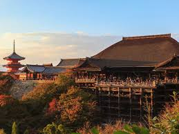

Viatge a Japó
Primer dia
El primer dia que vaig arribar a Tokio va ser a la tarda cap a les 16 de la tarda, el primer que vaig fer va ser agafar un taxi i deixar la maleta i les meves coses, a l'hotel APA que està situat a 5 minuts del centre i que tenia un preu força assequible per a l'època que era a la primavera, que és una de les èpoques on més gent visita japó. Feia força calor per ser primavera i vaig tenir sort ja que va fer molt bon temps aquells dies que vaig estar.

Després vaig anar a fer una volta per Tokio on el primer que vaig anar a veure va ser la cruïlla de Shibuya i la veritat que em va semblar impressionant ja que era gegant i hi havia molta gent a més que aquesta tot envoltat de pantalles i és molt futuristic, després vaig anar a veure botigues i a comprar roba ja que a Tòquio tenen molta implicació per la moda i pots trobar Gaxapon que són les màquines on pots atrapar ninots i figures, i finalment vaig visitar les botigues de Nintendo i Sega que són gegants

La veritat que se'm va passar el temps molt ràpid, llavors vaig decidir anar-me'n a sopar a un sushi que vaig veure per Tiktok que era molt recomanat i tenia molt bones valoracions, el menjar estava molt bo encara que si que és veritat que al estar situat al centre de Tokio els preus eren una mica alts però va valer la pena, un cop vaig sopar vaig donar una altra volta i vaig tornar a l'hotel.
Segon dia
El segon dia em vaig aixecar d'hora i vaig agafar un taxi per anar a una de les construccions més impressionants de Tokio la Tokio Tower la qual era més gran del que pensava i em va agradar molt ja que feia molt bon temps i hi havia unes vistes impressionants a més que aquell dia vaig tenir sort i no hi havia tanta gent.
Després vaig anar a aquest restaurant situat molt a prop de la Tokio Tower on eren especialistes en gyozas, mai les havia provat i estaven molt bones, després vaig anar a fer una volta pels parcs que hi havia a prop d'aquesta zona i vaig anar a veure més botigues, després vaig tornar a l'hotel i vaig sopar allà.
Per últim en aquell dia vaig anar a la discoteca tk nighclub que estava a shibuya amb uns amics on hi havia molta gent i m'ho vaig passar molt bé, després em vaig tornar per dormir a l'hotel.
Tercer dia
A l'últim dia vaig agafar un tren bala on vaig menjar alli per anar a kyoto, i era rapidíssim, a més que són sempre puntuals i tenen molta seguretat, quan vaig arribar a Kyoto vaig veure que era molt diferent a Tòquio perquè aquesta tenia construccions d'èpoques molt antigues i hi havia molts boscos i camins preciosos plens de cirerers.
Un cop vaig arribar, vaig anar a casa d'un amic a deixar la maleta i vaig anar al temple kiyomizu-dera que està situat en un bosc a la vora d'un penya-segat, la veritat que hi havia molt turista però era impressionant les vistes que tenia a més era preciós tot el que l'envoltava i havien moltes estàtues molt boniques, després vam anar a berenar al berenar al temple.
Recomanacions
M'ha encantat l'experiència. Recomanaria visitar Japó en primavera quan floreixen els cerecs. És un país molt net, segur i amb una cultura fascinant.